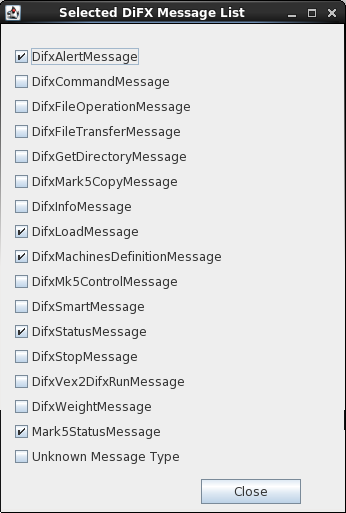
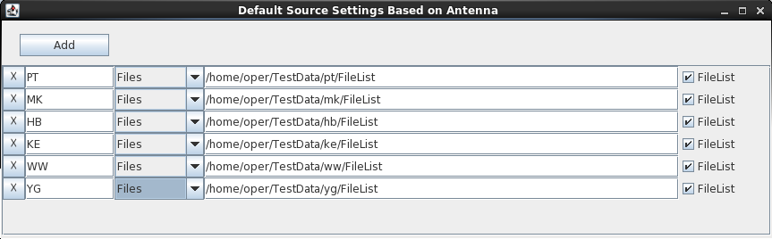

When the GUI is started it attempts to read an XML file
containing settings for all GUI parameters, window configurations,
etc. This file can either be specified as the first command
line argument when starting the GUI or a default file will be used
(the default file is "conf/guiSettings.xml" under the directory
specified by the environment variable "DIFXROOT", or, failing
that, the user's directory). Failing to read either a
specified file or the default file will cause internal default
settings to be used which may or may not be attractive. When
the GUI is exited the default XML file is written to reflect the
GUI's current state such that it can be started again in the
future essentially unchanged from where it was left.
Failures to read or write files will generate pop-up warnings, but
won't terminate the GUI's operation.
The Settings File section of the Settings Window can be used to
pick a new XML file name for reading or writing. This can be
useful if you want to save a specific GUI state for later use or
load a previously saved state:
This field shows the full path to the XML file that was most
recently read, either a user-specified file or the
default. If this field is in red it indicates that the
last read attempt failed for some reason and that whatever
settings that existed previously are still in place.
Open can be used to open an existing XML file that contains GUI
settings. A file browser will allow the file to be picked.
Save causes the current GUI settings to be written to the XML
path in the "Current" field.
This button produces a file browser from which a path for the
XML file can be picked. The XML file is written using the
current settings.
The Defaults button will restore the GUI to internal defaults (not the default XML file settings).
The GUI Title is a simple text string that can be used to
uniquely identify a settings configuration. The title will
be applied to the top-level GUI window.
The DiFX Control Connection settings determine how the GUI
communicates with and controls DiFX. In normal operation the
GUI makes a TCP connection with the guiServer process running on the DiFX "Host"
node. To complicate matters however, there are actually
three ways the GUI and DiFX can interact:

These check boxes determine how the GUI communicates with DiFX,
either through direct multicast messaging (unsupported,
incomplete, and unlikely to work very well) or via direct TCP
connection to guiServer (preferred, obviously). You
will almost always want to use the guiServer option - the
Multicast option exists for historical reasons and is maintained
because it has some utility in testing. By default the guiServer
option is checked.
The guiServer Connection light gives an immediate indication
whether a healthy TCP connection exists between the GUI and guiServer.
A green light means a good connection. Red means a broken
connection. A yellow light occurs when the GUI has some
concern about the connection (these usually turn red quickly) or
that a connection is in the process of being made (these usually
turn green quickly).
In "normal" operation the GUI and guiServer transfer data using a number of TCP ports that are opened and closed as needed - the port numbers and total number of these ports that can be simultaneously opened are controlled by the Transfer Port and Max Open Ports settings. If "Channel All Data" is selected, the GUI and guiServer will communicate and transfer all data over a single port - "channeling" all data transfers through that port. Channeling data is critical when operating the GUI/guiServer connection through an "ssh tunnel" where tunneling is required for each TCP connection, however the GUI operates perfectly well when channeling data under other circumstances.
The Transfer Port and Max Open Ports
determine the port numbers that will be used to transmit data from
guiServer to the GUI. The GUI often has cause to
request sets of data from the guiServer - the contents of
files, directory listings, etc. - that are then transmitted using
quick TCP connections that are opened as necessary and closed when
no longer needed. Whenever such a request is made it is
accompanied by a unique port number that is then used by guiServer
for the data transfer. The Transfer Port number specified
here is a "base" number that is used to form the unique port
numbers - port numbers increment from this base up to (Transfer
Port + Max Open Ports), and then recycle at the Transfer Port
number. Locking mechanisms assure that port numbers aren't
reused until they have been closed.
The user probably doesn't need to worry about these numbers much,
except to make sure there are no port restrictions that apply to
the range defined, and that the range is big enough. If file
transfers appear to be slow (pop-up monitors of file transfers
will let you know this) or to occasionally stall completely it is
possible that increasing Max Open Ports will help you, although it
is critical that Max Open Ports not be changed when any ports
are in use.
The Monitor Host and Port are used to specify the connection to
the difx_monitor server. This is a process that
provides real-time data feedback that can be used to monitor a
running job. The documentation on the Real-Time Job Monitor has more
detail about this.
The "guiServer Version" is the version of the DiFX software that
was used to build guiServer. GuiServer
depends on a number of DiFX header files and libraries (primarily
for file parsing) when it builds so in a perfect world it would
match the the
version of the GUI itself to assure
that they are compatible. However this is not, in general,
critical, as the file parsing libraries a fairly stable (and
almost always backward compatible) between DiFX versions.
There is no need for the guiServer Version to match the DiFX version used to run correlator
operations.
This is not a field the user can change - it is reported by guiServer
when a new TCP connection is made.
This field shows the version of the DiFX software that was used
to build the GUI. This field cannot be changed by the
user. It will be filled automatically when a TCP connection
is made.
The "Host Environment Vars" button creates a display of DiFX Host
environment variables as seen by guiServer:

The "DiFX Base" is a path on the DiFX host under which the DiFX
software resides. The DiFX Base is actually just one of the
environment variables (see above) found on the DiFX host.
Below this directory will be "bin" directories and source
directories for each installed DiFX version. The DiFX Base
is reported when a connection is made to guiServer - the
field is not user-settable.
The GUI does a number of things, such as organizing jobs and
creating/administering job data directories. But primarily
its purpose is to run DiFX, which it does for the most part by
executing DiFX applications on the DiFX host through system level
commands (equivalent to command line operations). The "Run
w/DiFX Version" setting can be used to instruct guiServer
to use a specific version of the DiFX application. A
pull-down menu will provide all of the DiFX software versions
installed on the DiFX host.
Note that this setting can be changed at any time during
the process of running a job, such that you can run some DiFX
applications using one version of DiFX, and others using
another. For instance, if you want to use the latest
development version of the software to run mpifxcorr, but
know that your data require vex2difx from version 2.1, and
you know what you are doing, you can change this setting at
different stages in the process accordingly. Which is not to
say this is recommended behavior.
Use the chosen DiFX Version name to produce a default value for
the DiFX Execute Script but appending to version name to
"rungeneric.". This will cause the DiFX Execute Script to be
over-written.
rungeneric.DIFX_DEVEL vex2difx [args...]When running mpifxcorr, which uses mpirun to run on multiple nodes, guiServer will run the following:
mpirun [args...] rungeneric.DIFX_DEVEL mpifxcorr [more args...]In the former case the execute script is run on the DiFX host (where guiServer is being run) while in the latter case it is run on each of the nodes in the cluster accessible to mpirun. In all cases, the node involved must be able to execute the named script.

This check box was put in place to avoid annoying error messages
during development and is largely obsolete. It will probably
be removed in the near future.
The "View DiFX Messages" button will bring up the "DiFX Message Traffic Monitor". This window lists all (recognized) DiFX message types that are received by the GUI (either directly via UDP, or relayed from the guiServer), displays their "raw" XML code, and parses them according to their type. A buffer of messages is stored. Users can select the types of messages they wish to see, examine any message in the buffer, and change the buffer size. Originally created for diagnostic purposes, this window provides a view into DiFX inter-process communication that may be useful, or at least amusing.

Using the "Request All" or "Request Selected" check boxes, guiServer can be instructed to relay all (default) or a selected subset of DiFX message traffic. The selection of desired message types can be controlled through a pop-up checklist obtained using the "Selected Messages" button:

This check box and text field cause the GUI (primarily in the
Hardware Monitor Window) to determine whether multicast messages
are from Mark 5 Nodes or Processor Nodes based on machine
names. If the box is checked the machine name of the source
of each message is compared to a list of comma-separated "regular
expressions" contained in the text field. If it matches any
one of them, the message is assumed to be from a Mark 5 unit and
is sorted accordingly.
Regular expressions are extremely useful for pattern matching, but if you haven't used them before they can be less than 100% intuitive. There are many online resources that explain them in excruciating detail. The default value for patterns "mark5.*" matches the NRAO practice (duplicated at USNO) of naming all Mark 5 machines such that they start with the five characters "mark5", as in "mark5-101.foo.edu".
The Hardware Monitor Window lists all processors and Mark 5
Modules on the LAN that are broadcasting mkdaemon
messages. Associated with each processor or module is an
"activity" light that turns green briefly whenever a new message
for that processor or module is received from mk5daemon
(these messages should be transmitted periodically if all is
working correctly). To alert the user when a processor or
module has not been heard from in a while, the light will
turn yellow after the "Warning" number of seconds have elapsed
with no received message. The light will turn red after the
"Error" number of seconds.
These Number Box
settings let you change the number of seconds that elapse without
messages before the lights change. They should be adjusted
to what works for your installation.
Job Creation Settings govern how experiments, passes, and jobs
are created using the Experiment
Editor. These are general settings - the editor itself
has many settings that can be applied to individual experiments
when they are being created and also allows these settings to be
overridden.

The working directory is the default path where a directory
devoted to a new experiment will be created. For instance,
if the Working Directory is defined as:
/home/difx/jobPatha new experiment assigned the (abitrary) name "MyExperiment" will be created in:
/home/difx/jobPath/MyExperiment
This is just the default - the actual path can be changed to
whatever the user wants in the Experiment Editor Identification
Data section.
The Antenna Defaults button shows the "Default Source Settings Based on Antenna" window which can be used to connect commonly used data source locations to particular antennas based on two-character code station names (these code names match those that appear in .vex files). These specifications are applied to antennas that appear in the Stations section of the Experiment Editor and, if done properly, can eliminate tedious and error-prone user settings.

The controls in the window are pretty straight-forward. To
add a new specification, click the "Add" button and edit the line
that appears. To remove a specification click the "X" button
associated with it. Only one specification for each antenna
code should be used (if there are multiple specifications for an
antenna the first one in the list will probably be used,
but this is not guaranteed behavior). The first field in a
new specification should be filled in with the (upper case) two
letter code for the antenna. A pull-down list provides
choices among data source types (files, module, or network).
A text field allows path or node name specification depending on
data type (the former for "files" data, the latter for "module"
data). A check box indicates that a file path is a file
list. If the data type is "Files" and "FileList" is not
checked, the path can include wildcards.
The Antenna Defaults will be applied to the Stations section of
the Experiment Editor when a new .vex file is used. They are
not necessarily final settings - users can still change them.
This check box will cause the GUI to not use stations that have a "-1" in the "code" column associated with their scan section in the "source" .vex file. The lines associated with unused scans are either deleted if "Excise Unused Scans from .vex File" is checked (see below), or are commented out if it is not checked. Examples:
The following lines from the $SCHED section of a .vex file
(note -1 in final column of station "Hb" line):
scan 329-1830b;
start = 2014y329d18h30m00s;
mode = GEOSX-SX;
source = 0537-441;
station = Hb : 0 sec : 60 sec : 0 ft : 1A : &ccw : -1;
station = Ke : 0 sec : 93 sec : 0 ft : 1A : &ccw : 1;
station = Ww : 0 sec : 122 sec : 0 ft : 1A : &ccw : 1;
station = Yg : 0 sec : 122 sec : 0 ft : 1A : &ccw : 1;
endscan;
are replaced by this if "Excise Unused Scans from .vex File"
is checked:
scan 329-1830b;
start = 2014y329d18h30m00s;
mode = GEOSX-SX;
source = 0537-441;
station = Ke : 0 sec : 93 sec : 0 ft : 1A : &ccw : 1;
station = Ww : 0 sec : 122 sec : 0 ft : 1A : &ccw : 1;
station = Yg : 0 sec : 122 sec : 0 ft : 1A : &ccw : 1;
endscan;
or this if it is not checked:
scan 329-1830b;
start = 2014y329d18h30m00s;
mode = GEOSX-SX;
source = 0537-441;
# station = Hb : 0 sec : 60 sec : 0 ft : 1A : &ccw : -1;
station = Ke : 0 sec : 93 sec : 0 ft : 1A : &ccw : 1;
station = Ww : 0 sec : 122 sec : 0 ft : 1A : &ccw : 1;
station = Yg : 0 sec : 122 sec : 0 ft : 1A : &ccw : 1;
endscan;
Doing this duplicates behavior found in hardware
correlators. Stations removed in this manner may be restored
by hand using the Scans/Station Timeline settings. By
default this box is checked - uncheck it if you don't want this
behavior.
When creating a new experiment the user often eliminates scans
contained in the original .vex file. When this happens the
.v2d file must create a list of all remaining scans.
Unfortunately there is a limit to the total number of characters
that can be used to do this, and as experiments get larger and
include more scans this limit is invariably encountered. The
.v2d file can also request "all" scans in the .vex file using very
few characters. As a kludge to get around the character
limit, the unused scans are instead removed from the .vex file
altogether and the "all" request is left in the .v2d file.
The .vex file without the scans is a copy, placed in the pass
directory for the new experiment. The original "source" .vex
file is not altered.
This setting will also remove stations from scans when they have
been selectively eliminated (either using the "-1" code as
described above or by
the user when creating an experiment). When the "Excise"
option is not selected, stations are commented out.
The primary motivation for this option (long scan lines in the
.v2d file) has been eliminated since its introduction, so by
default it is "off". The option has been left in place in
the event it serves some other purpose.
When more than one job is scheduled (this is generally the case
when using the scheduler), should each be run on its own, i.e.
with the entire DiFX processing cluster to itself, of should more
than one be run at a time? If you choose "Sequentially" the
scheduler will run each job on its own, started each subsequent
job only after the previous one has completed. If you choose
"Simultaneously" any number of jobs may be run at the same
time. You must set a maximum number that can be run
simultaneously.
In testing at USNO it was determined that, for the most part,
there is no advantage to running more than one job at a time, and
there may be a slight penalty. But it is not difficult to
imagine that simultaneous processing may be advantageous under
some circumstances and/or at different installations.
The scheduler can only plow through a long list of jobs if jobs
themselves complete, especially if they are being run
sequentially. That being said, it is not unheard of for a
job to hang up for any number of reasons. The Resource
Allocation Time Limit and Processing Time Limit specify a number
of seconds the scheduler should wait, after not receiving any
feedback (messages, data, whatever) from a job before "giving up"
on the job and moving on in the schedule. "Resource
Allocation" applies to the set up of processors and data sources,
and "Processing" applies to actual DiFX processing. Any job
that is abandoned is appropriately labeled in the Queue Browser.
The Resource and Processing Time Limits are applied only if their
associated check boxes are selected.
When this option is selected the scheduler will attempt to alter
and reschedule jobs that fail due to non-existent data for one or
more required stations. It does this by rebuilding the job
such that it no longer includes the missing station(s).
Details are here.
The version field is not currently in use, but may be used in the
future to coordinate the GUI with changes that may be made to the
database structure. It is set to the most recent version of
the database that the GUI can properly parse (at the moment this
is the only version is
can parse). Changing it will have no effect.
mysql -u USERIt does not necessarily match the username you may use to log into the DiFX host. The database must be set up to recognize this user, including access to the database from the host where the DiFX GUI is running. See Problems with Database Remote Access in the trouble-shooting section for details.
/etc/services file on the database host to find
out which port is being used.The database management system is the "application" used to
administer and access the DiFX database for your location, such as
mySQL, Postgresql, etc. (this is sometimes called the database
"vendor"). The management system is set up by your database
administrator when the DiFX database is initialized (this is all
done using a management system-specific "schema", as described in
the database documentation). Management systems known to
function with the GUI include mySQL and Postgresql. If you
change the management system you will also have to change the
driver - see the table below for drivers that are known to work
with each management system.
| Management System |
Driver |
| mySQL |
com.mysql.jdbc.Driver |
| Postgresql |
org.postgresql.Driver |


SQLException: Communications link failure The last
packet sent successfully to the server was 0 milliseconds ago.
The driver has not received any packets from the server.ps -ef | grep mysqlBoth mysql_safe and mysqld should be running. The latter is the mySQL server, the former is used to start it when/if it shuts down. In a proper installation of mySQL these programs should be running automatically after boot up. If they ARE running, see if a mySQL client can be run (the path may be different):
/usr/bin/mysql
SQLException: Access denied for user 'difxw'@'10.1.2.45'
(using password: YES)
/usr/bin/mysql -u root -pThen generate a list of all users and hosts recognized by mySQL:
mysql> select user, host from mysql.user;
+------+---------------------+In this list somewhere should be the user name you are using paired with the GUI host name. Note that mySQL treats user/host pairs almost as separate users - you must designate both your user name and host as a "user". To do this, the following command will both "create" the user/host pair and give it access to all databases (note that "grant" is a complex command used for many things - you should consult mySQL documentation before using this command with reckless abandon):
| user | host |
+------+---------------------+
| difx | 10.1.2.45 |
| difx | 127.0.0.1 |
| root | 127.0.0.1 |
| | localhost |
| difx | localhost |
| root | localhost |
| | swc02.usno.navy.mil |
| difx | swc02.usno.navy.mil |
| root | swc02.usno.navy.mil |
+------+---------------------+
9 rows in set (0.00 sec)
mysql> grant all privileges on *.* to 'difx'@'new.host.name';You should then see the user/host pair in the user list:
Query OK, 0 rows affected (0.00 sec)
mysql> select user, host from mysql.user;The user/host pair needs its own password specification - even if your user name already had a password, this is not enough! To specifiy the password for the new user/host pair (or to make sure your password is set properly on an existing user/host pair), do the following (replaced "PASSWORD" with your new password):
+------+---------------------+
| user | host |
+------+---------------------+
| difx | 10.1.2.45 |
| difx | 127.0.0.1 |
| root | 127.0.0.1 |
| | localhost |
| difx | localhost |
| root | localhost |
| difx | new.host.name | <---------------- HERE!!!!
| | swc02.usno.navy.mil |
| difx | swc02.usno.navy.mil |
| root | swc02.usno.navy.mil |
+------+---------------------+
10 rows in set (0.00 sec)
mysql> set password for 'difx'@'new.host.name'=password( 'PASSWORD' );At this point we reach the limits of my personal mySQL knowledge.
Query OK, 0 rows affected (0.00 sec)
blkjkdsf